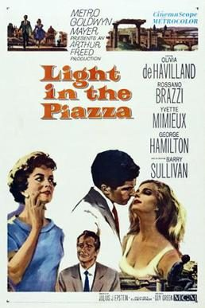

Light in the Piazza

Starring: Olivia de Havilland, Rossano Brazzi, Yvette Mimieux
Director: Guy Green
Writer: Julius J. Epstein
Producer: Arthur Freed
Light in the Piazza is a 1962 American romantic drama film directed by Guy Green and starring Olivia de Havilland, Rossano Brazzi, Yvette Mimieux, George Hamilton, and Barry Sullivan. Based on the 1960 novel by Elizabeth Spencer, the film is about a beautiful but mentally disabled young American woman traveling in Italy with her mother and the Italian man they meet during one leg of their trip.
Trivia
- Based on The Light in the Piazza (1960 novel by Elizabeth Spencer).
- The story first appeared as a novella in The New Yorker in June 1960.
- MGM purchased film rights in August and assigned it to producer Arthur Freed, while the novel version of the story was published later that year.
- Guy Green was given the job as director on the strength of The Angry Silence.
Filming Locations
- The film was shot on location in Rome and Florence, with interiors at MGM-British Studios near London, England.
Previous Showings
1 Run • 1 Festival
All runs on record (1):
- July 31 - August 3, 2010Summer 2010w/ Come September